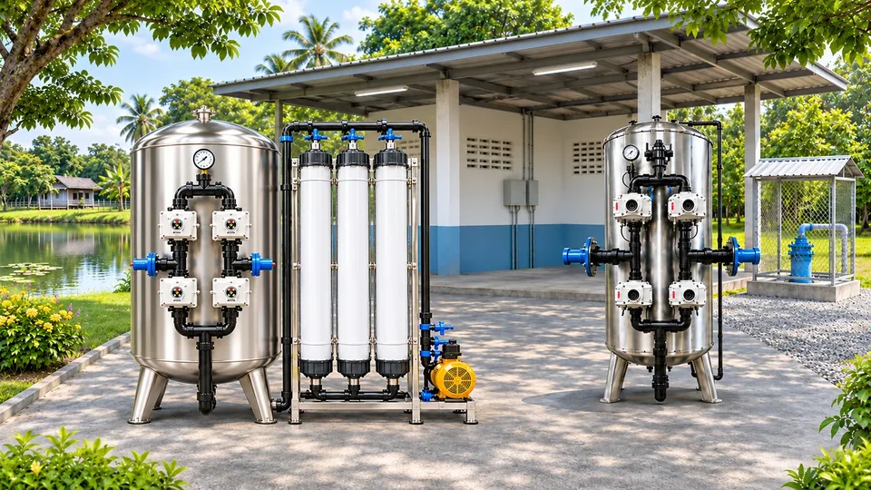
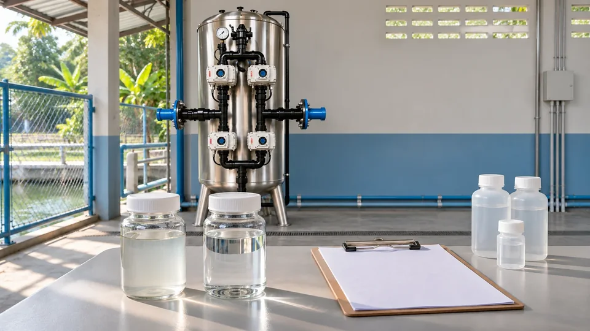

ระบบกรองน้ำผิวดินกับน้ำบาดาล ต่างกันอย่างไร เลือกให้ตรงกับน้ำดิบ
น้ำผิวดินขุ่นกับน้ำบาดาลที่ดูใส อาจต้องใช้ขั้นตอนบำบัดต่างกัน บทความนี้เปรียบเทียบการเตรียมน้ำ สารกรอง เมมเบรน การฆ่าเชื้อและการดูแล เพื่อช่วยเลือกเครื่องกรองน้ำประปาหมู่บ้านให้ตรงกับปัญหาน้ำจริง

สารบัญ
น้ำผิวดินกับน้ำบาดาลต่างกันตรงไหน?
ระบบกรองน้ำผิวดินและระบบกรองน้ำบาดาลมีเป้าหมายปรับคุณภาพน้ำเหมือนกัน แต่ลักษณะน้ำดิบและความเปลี่ยนแปลงอาจต่างกัน น้ำผิวดินจากแม่น้ำ คลอง สระ หรืออ่างเก็บน้ำมักรับตะกอนและสิ่งปนเปื้อนจากบริเวณรอบแหล่งน้ำ ส่วนน้ำบาดาลอาจละลายแร่ธาตุจากชั้นดินและหินระหว่างทาง
| เรื่องที่เปรียบเทียบ | น้ำผิวดิน | น้ำบาดาล |
|---|---|---|
| ปัญหาที่ควรเฝ้าระวัง | ความขุ่น สารแขวนลอย สาหร่าย สารอินทรีย์และจุลินทรีย์ | เหล็ก แมงกานีส ความกระด้าง ก๊าซหรือสารละลาย รวมถึงจุลินทรีย์เมื่อมีการปนเปื้อน |
| ความเปลี่ยนแปลง | อาจเปลี่ยนเร็วหลังฝนตก น้ำหลาก หรือกิจกรรมต้นน้ำ | อาจเปลี่ยนตามสภาพบ่อ การสูบ ฤดูกาล หรือการรุกของน้ำเค็ม |
| ประเด็นการเตรียมน้ำ | จัดการตะกอนและความผันผวนก่อนกรอง | ประเมินการออกซิไดซ์แร่ธาตุ การลดความกระด้างหรือสารละลาย |
| วิธีตัดสินเลือกระบบ | ใช้ผลตรวจน้ำและข้อมูลหน้างาน | ใช้ผลตรวจน้ำและข้อมูลหน้างาน |
สิ่งเหล่านี้เป็นแนวโน้ม ไม่ใช่ข้อสรุปของทุกพื้นที่ น้ำผิวดินก็อาจกระด้างหรือน้ำกร่อยได้ และน้ำบาดาลใสก็อาจมีสารที่มองไม่เห็น จึงไม่ควรเลือกเครื่องกรองจากชื่อแหล่งน้ำหรือสีของน้ำเพียงอย่างเดียว
ตรวจน้ำอะไร ก่อนเลือกเครื่องกรองน้ำประปา?
ระบุว่าน้ำหลังกรองใช้เพื่ออุปโภค ผลิตน้ำดื่ม หรือกระบวนการเฉพาะ แล้วให้ห้องปฏิบัติการหรือผู้ออกแบบช่วยเลือกรายการตรวจ เช่น ความขุ่น สี pH เหล็ก แมงกานีส ความกระด้าง ความนำไฟฟ้า/TDS และจุลชีววิทยา หากมีความเสี่ยงสารหนูหรือสารเคมีเฉพาะ ต้องตรวจรายการนั้นโดยตรง

ควรบันทึกตำแหน่งและช่วงเวลาที่เก็บตัวอย่างด้วย โดยเฉพาะพื้นที่ที่น้ำเปลี่ยนตามฤดู ภาชนะ วิธีเก็บ และระยะส่งต้องทำตามคำแนะนำของห้องปฏิบัติการ ภาพน้ำในบทความช่วยประกอบความเข้าใจ ไม่ใช่ผลตรวจหรือการยืนยันความปลอดภัย
อ่าน วิธีเลือกเครื่องกรองน้ำประปาชุมชน สำหรับการนำผลตรวจไปพิจารณาร่วมกับปริมาณใช้น้ำ ถังพัก และเวลาที่เดินระบบได้
ระบบกรองน้ำบาดาล: ปรับสภาพก่อน แล้วเลือกกรองให้ตรงปัญหา
1. เติมอากาศหรือออกซิไดซ์เมื่อจำเป็น
การเติมอากาศช่วยให้เหล็กบางรูปเปลี่ยนเป็นตะกอนที่แยกออกได้ และอาจช่วยลดก๊าซบางชนิด เช่น ไฮโดรเจนซัลไฟด์ที่เกี่ยวข้องกับกลิ่นไข่เน่า แต่ประสิทธิภาพขึ้นกับคุณภาพน้ำและรูปของสาร แมงกานีสบางกรณีต้องใช้สภาวะหรือกระบวนการเพิ่มเติม ไม่ควรถือว่าเติมอากาศอย่างเดียวเพียงพอเสมอ
บางระบบใช้สารออกซิไดซ์ เช่น คลอรีน ก่อนแยกตะกอนและกรอง ต้องกำหนดปริมาณ เวลาสัมผัส และขั้นตอนต่อเนื่องโดยผู้ออกแบบ การเติมคลอรีนก่อนกรองไม่ได้ยืนยันว่าการฆ่าเชื้อที่ปลายทางเพียงพอแล้ว
แนวทางของ Drinking Water Inspectorate อธิบายการออกซิไดซ์เหล็กก่อนกรอง และวิธีจัดการแมงกานีสที่ขึ้นกับสภาวะน้ำ
2. เลือกสารกรองตามหน้าที่
| วัสดุหรือกระบวนการ | หน้าที่ที่ใช้พิจารณา | ข้อควรรู้ |
|---|---|---|
| ทราย / แอนทราไซท์ | ดักตะกอนและสารแขวนลอย | ไม่กำจัดสารละลายทุกชนิดแทนกระบวนการอื่น |
| สารกรองเหล็กและแมงกานีส / Birm | ใช้จัดการแร่ธาตุตามชนิดวัสดุและเงื่อนไข | วัสดุแต่ละชนิดไม่เหมือนกัน ต้องตรวจ pH ออกซิเจน และข้อกำหนดผู้ผลิต |
| คาร์บอน | ดูดซับกลิ่นและสารบางชนิด รวมถึงลดคลอรีนตามการออกแบบ | ไม่ใช้แทนการลดความเค็มหรือความกระด้าง |
| เรซินลดความกระด้าง | แลกเปลี่ยนแคลเซียมและแมกนีเซียมในระบบน้ำอ่อน | ต้องฟื้นสภาพตามคู่มือและจัดการน้ำทิ้ง |
ตารางนี้ไม่ได้เป็นลำดับถังมาตรฐานสำหรับทุกโครงการ อาจใช้เพียงบางกระบวนการ แยกถัง หรือมีขั้นตอนอื่นร่วมด้วย ดู สารกรองน้ำที่เกี่ยวข้อง เพื่อทำความเข้าใจหน้าที่ก่อนกำหนดชุด
3. แยกปัญหาทั่วไป น้ำมีหินปูน และน้ำกร่อย
ตัวอย่างในหน้า ถังกรองน้ำประปาบาดาลของ Sunnex มีรูปแบบทั่วไป รุ่นสำหรับน้ำมีหินปูน และ WFG304-10 พร้อมชุดลดค่าน้ำกร่อย การเลือกรูปแบบต้องใช้ผลตรวจยืนยัน ไม่ใช่เห็นคราบขาวแล้วสรุปกระบวนการทันที ตัวเลขกำลังผลิตของถังกรองต้นทางก็ไม่ใช่การยืนยันปริมาณน้ำผลิตหลังเมมเบรน
ระบบกรองน้ำผิวดิน: จัดการความขุ่นก่อนเข้าชุดกรอง
1. ดักเศษขยะและประเมินตะกอนต้นทาง
ตะแกรงหรืออุปกรณ์ดักเศษที่เหมาะกับท่อดูดช่วยกันใบไม้และเศษขนาดใหญ่ แต่ไม่ได้แยกตะกอนละเอียดทั้งหมด หากน้ำมีความขุ่นสูง การส่งเข้าเครื่องกรองโดยตรงอาจทำให้ภาระตะกอนสูงและต้องล้างบ่อย จึงควรประเมินขอบเขตน้ำเข้าที่ชุดรองรับ
2. อาจต้องรวมตะกอนและแยกตะกอนก่อนกรอง
บางพื้นที่ใช้สารช่วยรวมตะกอน เช่น สารส้มหรือโพลีอะลูมิเนียมคลอไรด์ (PAC) ร่วมกับการกวน การรวมตะกอน และการแยกตะกอน ต้องทดสอบและควบคุมตามคุณภาพน้ำ ถังพักทั่วไปไม่ใช่ถังตกตะกอนที่มีประสิทธิภาพโดยอัตโนมัติ ต้องดูการไหล เวลากัก และทางระบายตะกอนตามแบบ
CDC แสดงภาพรวมกระบวนการผลิตน้ำ ที่ใช้หลายขั้นร่วมกัน การเปลี่ยนบ่อตกตะกอนเป็นอุปกรณ์สำเร็จรูปจึงควรตรวจแบบและความสามารถของชุด ไม่สรุปจากวัสดุถัง
3. กรองและตรวจบทบาทของชุดไมโคร
ชั้นกรองตะกอนและมัลติมีเดียช่วยลดสารแขวนลอย ส่วนคาร์บอนอาจใช้กับกลิ่นหรือสารบางชนิดที่ดูดซับได้ ไม่ควรกล่าวว่ากำจัดสารเคมีเกษตรได้ทุกชนิด ต้องใช้ข้อมูลสารเป้าหมายและผลทดสอบของระบบ
ชุดกรองละเอียดหรือไมโครต้องดูชนิดไส้กรองและพิกัดจริง คำว่า Big Blue หรือไส้กรองจีบไม่ได้ยืนยันความละเอียด 5 ไมครอนทุกรุ่น และไส้กรองตะกอนทั่วไปไม่ใช่อุปกรณ์ฆ่าเชื้อ
ตัวอย่าง ถังกรองน้ำประปาผิวดินอัตโนมัติ ในเว็บไซต์มีรายละเอียดชุดถังกรองและชุดไมโครสำหรับน้ำผิวดิน ไม่จำเป็นต้องมีถังกรอง 2–3 ใบตามสูตรเดียวกันทุกระบบ หากต้องวางระบบทั้งชุด ดู โรงกรองน้ำประปา 12Q และขอบเขตงานประกอบเพื่อเปรียบเทียบเพิ่มเติม
UF กับ RO ต่างกัน และไม่จำเป็นต้องใช้ทั้งคู่ทุกระบบ
| กระบวนการ | บทบาทโดยทั่วไป | ข้อจำกัดที่ต้องตรวจ |
|---|---|---|
| UF | ลดอนุภาคและจุลินทรีย์ตามพิกัดเมมเบรน | ไม่ใช้เป็นวิธีลดความเค็มหรือสารละลายแทน RO ต้องดูผลทดสอบของรุ่น |
| RO | แยกสารละลายหลายชนิดด้วยเมมเบรนและแรงดัน | ต้องเตรียมน้ำเข้า ประเมินน้ำผลิต น้ำทิ้ง และดูแลเมมเบรน |
| UV | ยับยั้งเชื้อตามขนาดและเงื่อนไขการออกแบบ | ไม่กำจัดความเค็มหรือสารเคมี และไม่มีฤทธิ์ฆ่าเชื้อคงเหลือในท่อ |
CDC แยกหน้าที่ของระบบเมมเบรนและ UV ไว้ต่างกัน จึงไม่ควรเรียกรวมว่ากรองแร่ธาตุและเชื้อโรคได้เหมือนกันทั้งหมด
ถ้าต้องการผลิตน้ำดื่ม ควรออกแบบทั้งการกรอง ฆ่าเชื้อ เก็บพัก และจ่ายน้ำ พร้อมตรวจคุณภาพตามวัตถุประสงค์ อ่าน วิธีเลือกเครื่องกรองน้ำดื่ม RO 12Q/24Q เพื่อแยกหน่วยกำลังผลิตต่อวันออกจากโรงกรองน้ำประปาที่ระบุต่อชั่วโมง
ระบบประปาชุมชนต้องดูการฆ่าเชื้อและท่อจ่ายร่วมกัน
การใช้คลอรีน UV หรือโอโซนต้องดูคุณภาพน้ำ ปริมาณเชื้อ อัตราการไหล และเงื่อนไขการทำงานจริง ไม่ใช่ติดหลอดหรือปั๊มจ่ายสารแล้วถือว่าครบ การลดความขุ่นก่อนฆ่าเชื้อและการตรวจผลเป็นส่วนสำคัญของระบบ
UV และโอโซนไม่ได้คงฤทธิ์ป้องกันการปนเปื้อนตลอดโครงข่ายเหมือนการรักษาสารฆ่าเชื้อคงเหลือที่ออกแบบเหมาะสม ตำแหน่งจ่ายสารและเกณฑ์ควบคุมจึงควรสัมพันธ์กับถังพักและระยะจ่ายน้ำ โดยใช้ข้อกำหนดที่เกี่ยวข้องกับโครงการ
ไม่ควรวางคาร์บอนเพื่อลดคลอรีนก่อนเข้าท่อจ่ายโดยไม่ประเมินแผนฆ่าเชื้ออีกครั้ง เพราะอาจลดสารคงเหลือที่ต้องการในระบบน้ำประปาชุมชน ส่วนถังเก็บควรปิดมิดชิดและเข้าล้างได้ ดู ถังเก็บน้ำประปา ประกอบการจัดพื้นที่
Backwash กับการฟื้นสภาพเรซินเป็นคนละงาน
- Backwash: ชะล้างตะกอนออกจากชั้นกรองตามอัตราและลำดับวาล์วที่กำหนด ระบบอัตโนมัติยังต้องตรวจว่าเปิดล้างและระบายได้จริง
- Regeneration: เรซินลดความกระด้างบางระบบใช้น้ำเกลือฟื้นสภาพตามคู่มือ ไม่ใช่เพียงล้างย้อนด้วยน้ำแล้วคืนความสามารถทั้งหมด
- เปลี่ยนวัสดุ: คาร์บอนหรือวัสดุที่หมดความสามารถอาจต้องเปลี่ยน การล้างย้อนทำให้วัสดุทุกชนิดกลับมาใหม่ไม่ได้
- รอบดูแล: ดูภาระตะกอน ความต่างแรงดัน อัตราการไหลและผลตรวจ ไม่สรุปว่าน้ำผิวดินต้องล้างบ่อยกว่าน้ำบาดาลทุกกรณี
อ่าน การดูแลระบบประปาหมู่บ้าน เพื่อจัดบันทึกการเดินเครื่องและวางแผนตรวจตามคู่มือของระบบจริง
ข้อมูลที่ควรเตรียมเพื่อเลือกระบบให้ตรงกับหน้างาน
- แหล่งน้ำ ผลตรวจล่าสุด และความเปลี่ยนแปลงตามฤดูกาล
- วัตถุประสงค์น้ำใช้หรือน้ำดื่ม และปัญหาที่พบจริง
- ยอดใช้น้ำต่อวัน ช่วงสูงสุด ชั่วโมงเดินระบบ และถังพักเดิม
- ปริมาณน้ำต้นทาง ข้อมูลปั๊ม ท่อ ไฟฟ้า พื้นที่และทางระบาย
- งบประมาณ ขอบเขตติดตั้ง ผู้ดูแล และแผนตรวจคุณภาพน้ำ
สำหรับเครื่องกรองน้ำหมู่บ้านหรือเครื่องกรองน้ำ อบต. ควรเปรียบเทียบอุปกรณ์บนขอบเขตงานเดียวกัน รวมงานเตรียมน้ำ ล้างย้อน ฆ่าเชื้อ ถังพัก และการตรวจรับ โดยไม่ตัดสินจากจำนวนถังหรือราคาเริ่มต้นอย่างเดียว
คำถามที่พบบ่อยเรื่องกรองน้ำผิวดินกับน้ำบาดาล
น้ำบาดาลใสสามารถใช้ได้โดยไม่กรองหรือไม่?
ความใสไม่ยืนยันคุณภาพ ควรตรวจน้ำตามวัตถุประสงค์ แล้วจึงกำหนดว่าต้องปรับคุณภาพส่วนใด
น้ำผิวดินต้องมีบ่อตกตะกอนทุกระบบไหม?
ไม่จำเป็นต้องเป็นบ่อแบบเดียวกันทุกพื้นที่ แต่ต้องมีวิธีจัดการภาระตะกอนที่เหมาะกับน้ำเข้าและความสามารถของชุดกรอง
ทุกระบบต้องมีคาร์บอน เรซิน และสารกรองแมงกานีสไหม?
ไม่จำเป็น เลือกจากผลตรวจน้ำและเงื่อนไขของวัสดุ ไม่ใช่ใส่ทุกชนิดเรียงตามลำดับตายตัว
UF ลดน้ำกร่อยได้เหมือน RO ไหม?
ไม่ควรใช้ UF แทนกระบวนการลดเกลือหรือสารละลาย ต้องประเมิน RO หรือเทคโนโลยีที่เหมาะกับคุณภาพน้ำ
คาร์บอนกำจัดสารเคมีเกษตรได้ทุกชนิดหรือไม่?
ไม่ได้ยืนยันกับทุกชนิด ต้องดูสารเป้าหมาย ความสามารถวัสดุ เวลาสัมผัสและผลทดสอบของระบบ
น้ำผิวดินต้อง Backwash บ่อยกว่าน้ำบาดาลเสมอไหม?
ไม่เสมอ รอบล้างขึ้นกับภาระตะกอน การเดินเครื่อง สารกรองและตัวชี้วัดของระบบจริง
ถังกรองบาดาลกับถังกรองผิวดินใช้แทนกันได้ไหม?
ต้องตรวจสเปก ขอบเขตน้ำเข้าและผลตรวจน้ำก่อน ไม่ควรสลับใช้งานจากขนาดถังที่ใกล้กันเพียงอย่างเดียว